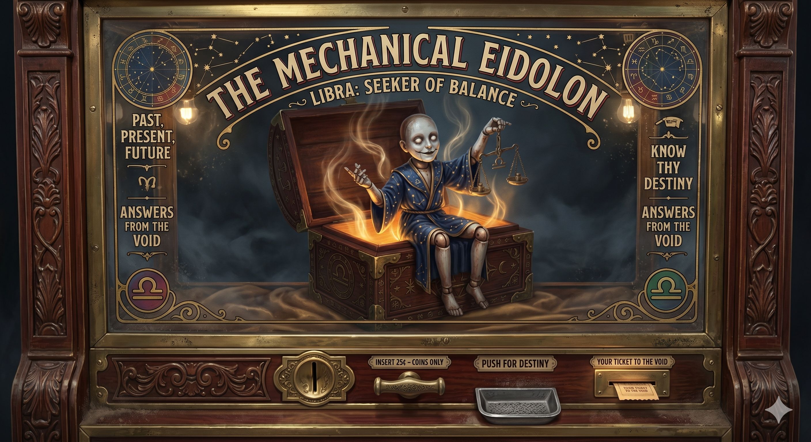

Appears in: Couch Potato Chaos
Profile

-
Appears in: Couch Potato Chaos
-
Aliases: The Eidolon of Information, the Eidolon of Prophecy
-
Role: One of the four eidolons — the oracle. Libra is the eidolon of information, appearing as a fortune-telling puppet in a box. It answers a single question truthfully before vanishing. Its rare, predictable appearances are the target of decades of research by those desperate enough to seek cosmic knowledge.
-
Personality: Libra is the most enigmatic of the four eidolons — a being of pure information that manifests in the most unsettling form imaginable: a fortune-telling puppet inside a box. Where Catalyst invites, Entropy destroys, and Snickers meddles, Libra simply reveals. Its domain is truth — unvarnished, absolute, and limited to exactly one question per appearance. The eidolon does not elaborate, does not comfort, and does not return. It answers what is asked and vanishes, leaving the petitioner to live with the consequences of knowing. This absolute economy of interaction makes Libra both the most sought-after and the most dangerous eidolon to approach: you get exactly one truth, and the wrong question wastes your only chance forever. [Mad Marina](./character-mad-marina.html) spent decades researching Libra’s movements and appearance patterns, motivated by an unspoken personal question she never gets to ask — a fact that underscores the eidolon’s terrible scarcity. The being’s choice of form — a puppet in a box, like a child’s toy or a carnival attraction — is deeply uncanny, suggesting that Libra treats the revelation of cosmic truth with the same trivial presentation as a fortune-telling machine at a fairground. It is the eidolon that most closely resembles a game mechanic: insert question, receive answer, session over.
-
Backstory: As one of the four fundamental eidolons alongside Catalyst, Entropy, and [Snickers the Bumble](./character-snickers-the-bumble.html), Libra has existed since before Etheria’s recorded history. The eidolons are not created beings but intrinsic cosmic forces. Libra’s domain is information: truth, prophecy, the revelation of what is hidden. Unlike Entropy’s world-ending bargain or Catalyst’s transformative offers, Libra’s interactions with mortals are strictly transactional and extraordinarily rare. The eidolon appears at unpredictable intervals that can, with sufficient mathematical sophistication, be predicted: Marina kept detailed logs of every sighting for decades, and the pattern was ultimately solved through six-dimensional mathematics by an enslaved arachnid mathematician named Spindra, with Pan contributing the key insight of a four-dimensional hyper-sphere. The extreme complexity of predicting Libra’s appearances — requiring higher-dimensional geometry and years of collaborative research — suggests the eidolon’s movement through reality follows patterns that transcend normal spatial and temporal understanding.
-
Significant story events:
- Pre-story — Marina’s decades of research: [Mad Marina](./character-mad-marina.html) spent most of her 107-year life studying Libra’s movements, keeping detailed logs of every reported sighting. Her personal question — hinted at but never revealed — drove much of her motivation throughout her life. The research never yielded a prediction during her lifetime, until the collaboration with Pan and Spindra.
- The Libra Research (Years 8–11, Chapter 27, Chaos): When Pan learns she will lose her summoner class at sixteen and Ari will disappear, Marina reveals her decades of research into Libra’s movements. Over three years, Marina, Ari, and Pan work through predictive models. Pan contributes the key insight of using a four-dimensional hyper-sphere, and they ultimately “rent” an enslaved arachnid mathematician named Spindra who solves the prediction in six dimensions. The research predicts the timing and location of Libra’s next appearance.
- Escape from Wilmarth (Chapter 27, Chaos): Spindra’s prediction of Libra’s next appearance triggers the escape plan from Zhakara. Marina kills Spindra’s guard, melts the arachnid’s slave collar, blows up her own house, and overchannels a devastating lightning spell at the town gates — dying in the process. When Ari asks what her question for Libra was, Marina responds: “It doesn’t matter anymore. The two of you have already given me the answer.” Her inventory empties, confirming her final death. Marina never gets to ask her question.
- Libra’s predicted appearance: The wiki does not detail the actual encounter with Libra beyond establishing that the prediction was correct and the eidolon appeared as expected — a fortune-telling puppet in a box, answering one question truthfully before vanishing. What question was asked (by Ari, Pan, or the group) and what answer Libra gave is not recorded in the wiki.
- Pan’s relationship with Libra: Pan’s profile lists Libra as a “prophetic guide” — “The eidolon of information delivers prophecies that shape Pan’s movements and goals.” This suggests that whatever Libra revealed during the encounter directly influenced Pan’s subsequent decisions and the path she took through the remainder of the story.
-
Notable Quotes:
[Libra’s actual dialogue — the answer to whatever question was posed during its appearance — is not individually quoted in the wiki. The eidolon’s most significant narrative impact is indirect: Marina’s decades of obsessive research, the collaborative mathematical prediction, and Marina’s death to reach the predicted appearance site. The eidolon speaks only once per appearance and vanishes, making any dialogue precious and scarce.]
“Maybe I did [want to ask a question]. I doubt I’ll have the chance now.” — Chapter 27, [Mad Marina](./character-mad-marina.html) and the Phantom Child. Marina deflects Ari’s question about what she wanted to ask Libra. (Attributed to Marina, not Libra, but the line encapsulates the eidolon’s narrative significance.)
-
Physical description: Libra manifests as a fortune-telling puppet inside a box — a being of pure information that presents itself in the most uncanny form imaginable. The puppet’s appearance is not described in detail in the wiki, but the concept is clear: a small, articulated figure, like a marionette or ventriloquist’s dummy, housed within a container (the “box”) that presumably opens or activates when the eidolon appears. The puppet-in-a-box form evokes carnival fortune-telling machines, toy theatres, and the unsettling liminality of objects that appear to be alive but shouldn’t be. As a cosmic entity, Libra’s true nature likely bears no relation to its chosen manifestation — the puppet form is how the eidolon of information chooses to present itself to mortals, possibly as commentary on the triviality of mortal questions or the performative nature of prophecy.
-
Relationships:
- [Mad Marina](./character-mad-marina.html) (devoted researcher, never petitioner): Marina spent decades studying Libra’s movements, driven by a personal question she never reveals. She dies escaping Wilmarth to reach Libra’s predicted appearance, but never asks her question — deciding instead that Ari and Pan have already given her the answer. The eidolon’s existence defined the last years of Marina’s life, yet she never directly interacted with it.
- [Pan / Panella Branford](./character-pan-panella-branford.html) (beneficiary of prophecy): Pan’s profile describes Libra as a “prophetic guide” whose revelations “shape Pan’s movements and goals.” Whatever Libra revealed during the predicted appearance directly influenced Pan’s subsequent path through the story.
- [Ari / Aralogos Branford](./character-ari-aralogos-branford.html) (witness): Present during the years of Libra research and the escape from Wilmarth. Asked Marina about her question for Libra in her final moments.
- Spindra (mathematical predictor): The enslaved arachnid mathematician who solved the six-dimensional equations predicting Libra’s next appearance. Spindra never met the eidolon but made the encounter possible.
- Catalyst, Entropy, [Snickers the Bumble](./character-snickers-the-bumble.html) (fellow eidolons): The four cosmic entities form a system of fundamental forces. Libra’s domain of truth and information complements Catalyst’s change, Entropy’s destruction, and Snickers’ mischief.
-
References: Couch Potato Chaos: Chapter 27 - [Mad Marina](./character-mad-marina.html) and the Phantom Child, Characters